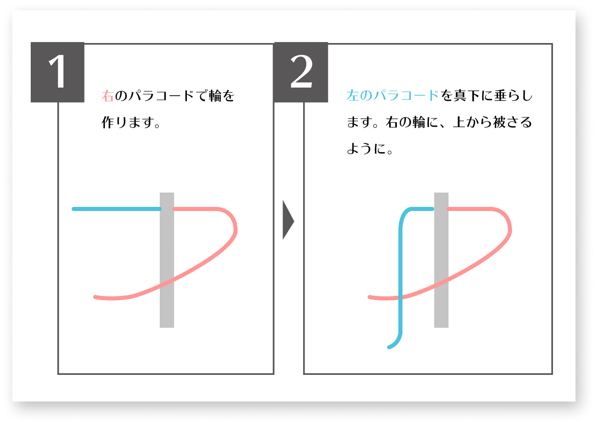
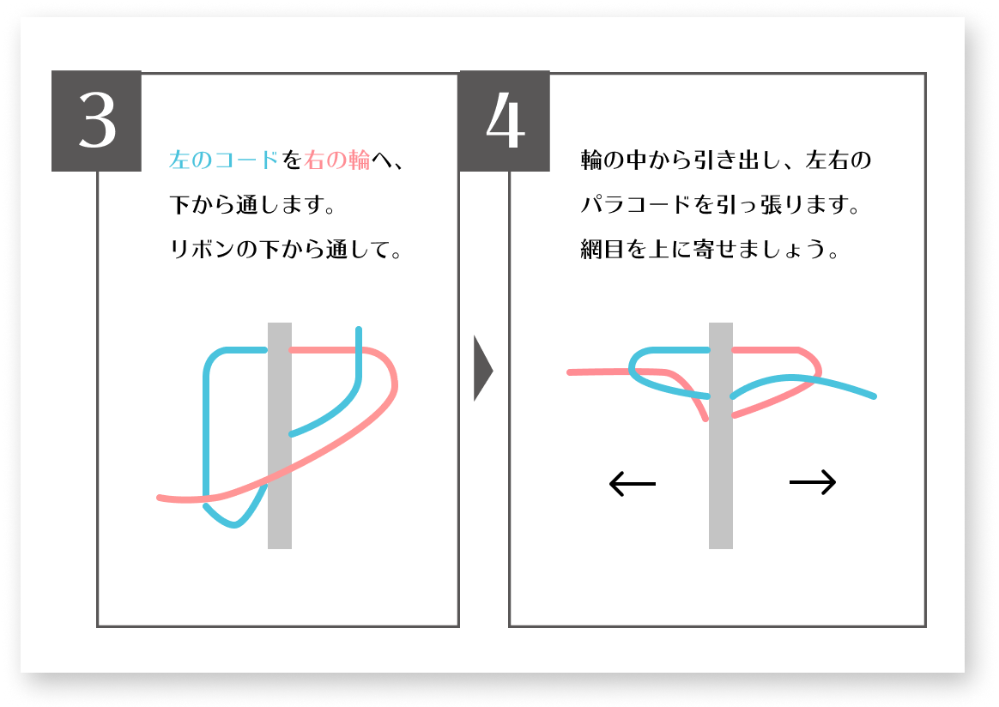
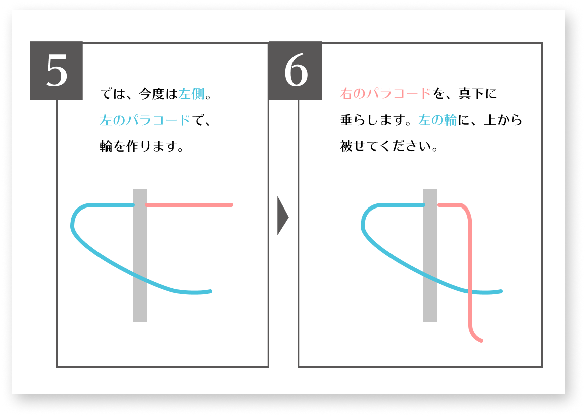
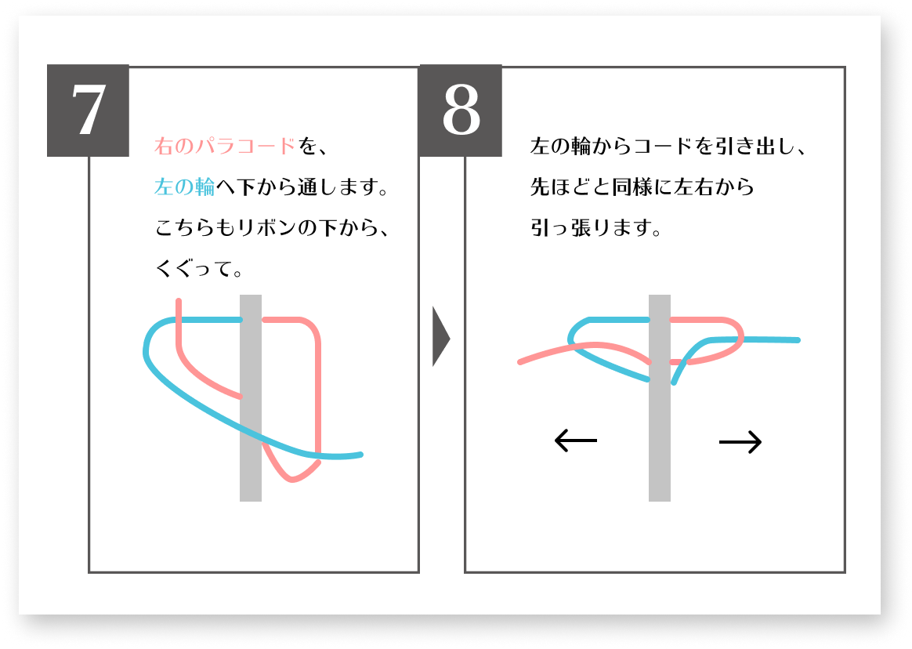
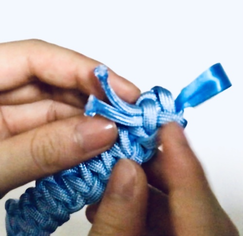
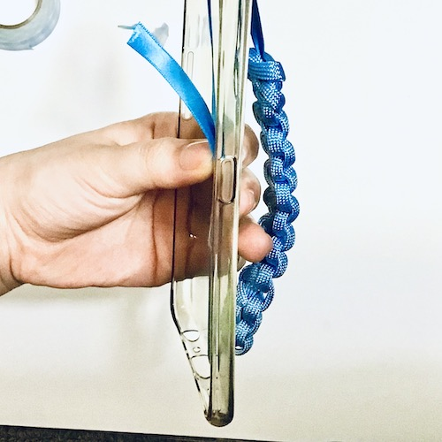
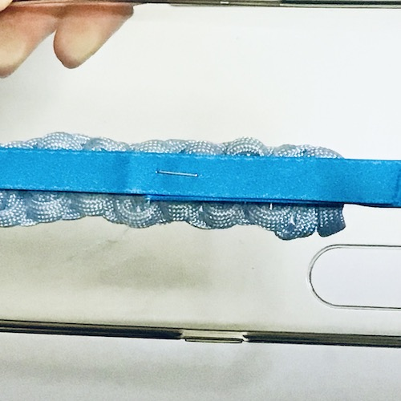

このスマホ、私の「もしも」。
スマホケース制作コンテンツ・ノーマホは、
「スマホ落下防止用のバンドを「パラコード」から作り、ほどいて活用しよう」
そんな発想から生まれました。
自分のスマホに合わせ、紐を編む。
編みながら、紐の使い方を考える。
紐をほどいて、サバイバルグッズとつなげてみる。
余った紐は、お家で保管。作ったケースは、普段遣い。
編んでほどいて、考えて。まるで魔法のように、そして魔法よりも確かな、「もしも」を作る・向き合う。そんな価値提供を目指したのが、この「ノーマホ」ケースです。
キュッと詰まった編み目がかわいい、バッとほどいた使い道が頼もしい、新たな防災の形。
ここでは、そんなノーマホケースの作り方をご紹介。
あなたのスマホと紐を使って、もしもの魔法を始めましょう！
使うもの
今流行りの（？）ハイループフォンストラップ・キーリングハンガーチックな、スマホバンドを作ります。
ケースにリボンを挟んでいるだけなので、簡単に着脱可能です。
●使用するもの
・スマホケース
・リボン
→幅１cm・長さ40〜50cmほどがおすすめ。
・パラコード（丈夫な紐）
→実際に使用するのは１〜２mほど。
余った分は常備しておくと、一石二鳥です。
●あるといいもの
・ライターやチャッカマン
・ホチキス
・マスキングテープ
・両面テープなど、リボンをケースに固定できるもの
普段は指を通して、スマホ落下防止をお助け。サバイバル時には、バンドをほどいて使います。
パラコード
ノーマホで使っているのは、パラコードという丈夫な紐。
別名パラシュートコードと呼ばれ、人を吊るせるほどの耐久力を持ちます。

耐久力の秘密は、その中身。
先をほぐして引っ張ると、そこにはなんと7本の細い紐が！この構造により、普通のロープよりも強く・広い紐になっているんです。
最近ではカラーバリエーションや編み方も増え、アクセサリーにする人も。
つまり、普通の紐よりとっても強い！とっても使える！なのに、意外とかわいい！
そんなパラコードが、今回の主役です。
そんなことはありません！普通の紐や手芸用ロープでもOK。紐があるだけでも、色々な活用ができます。実際にこちらで紹介する使い方も、ほとんど通常の紐で代用可能です。
ノーマホの目的は、あくまで「もしも」と、「楽しく可愛く真剣に」向き合うこと。
非常時に活用できる紐を、日常生活に自分の意思で取り入れる…。ここが１番のキモです！パラコードに囚われず、ぜひあなたのやってみたい形でノーマホしてみて。
パラコードは、主にキャンプや登山のために使用されています。アウトドアに親しい方なら、知らない間に活用しているかも。
またフリマや通販では、入手も簡単。
おしゃれや節約にいつも使っているフリマアプリなら、好きな色のパラコードを手軽に購入できます！およその相場は、3m300円から。かわいい色も多いので、ぜひ一度検索してみてください。
作り方
それでは一緒に、ノーマホを編んでいきましょう。
1.
長さ調整
まずはスマホケースの縦幅に合わせ、リボンを切ります。
スマホケースが、縦に挟める長さにしてください。
ケースを縦に一周し、ゆとりを持って止まる長さでチョキリ。参考までに、６.４インチのスマホでは40cmでした。iPhone11や12なら、35cmくらい？

ケースを表に返し、バンド部分の長さを決めます。
マスキングテープで、おおよその印をつけておきましょう。
この分、パラコードを編みます。

テープの印を参考に、パラコードを切ります。
パラコードの長さは、作りたい長さの12倍〜13倍ほどを目安にしてくださいね。
ちなみにの「平編み」では、およそ以下のように編めます。
●10cmのバンド→パラコード約120cm
●12cmのバンド→パラコード約150cm
2.
コード編み
ここから、パラコードを「平編み」していきます。
リボンを中心に、パラコードを「右」と「左」に分けて編みますよ！
まずは右です。
 次は左。
 
上に寄せると、このように網目が出来上がります。
あとは左右交互繰り返し、マスキングテープの印まで編み込みます。
マスキングテープの印まで編めたら、スマホケースに合わせ長さを確認します。
スマホバンドとして、ちょうどいい長さにしてくださいね。
ちょうどいい長さになったら、裏側に端を入れ込み、ほつれを防ぎます。
まずはリボンを裏返し、下から２つ上ほどの網目を緩めます。
緩めた網目の下から、左右それぞれの先端を通します。
先端が長ければ、先を1cmほど残して切ります。
裏の網目に入れ込めるほど短くなっていれば、切らないで大丈夫です。
裏の網目に端を入れ込んだら、バンド部分の完成です！
2.
スマホ装着
できたバンドを、スマホケースに通します。充電端子の間を潜らせて、上から下にリボンを通してください。
上部のたわみや、指を入れた時の隙間に気をつけて、止める位置を決めます。
位置を決めたら、スマホケースの裏側でリボンを止めます。
リボンの先端を、ホチキス止めしましょう。強度に不安があれば、両面テープなどで固定してください。

上からスマホをはめこんで、ノーマホの完成です！！
さあ、ここまでできたら、今度はノーマホを解いて使っていきましょう！ぜひUseしてみて下さいね。